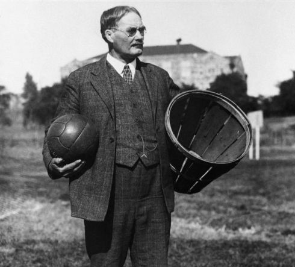
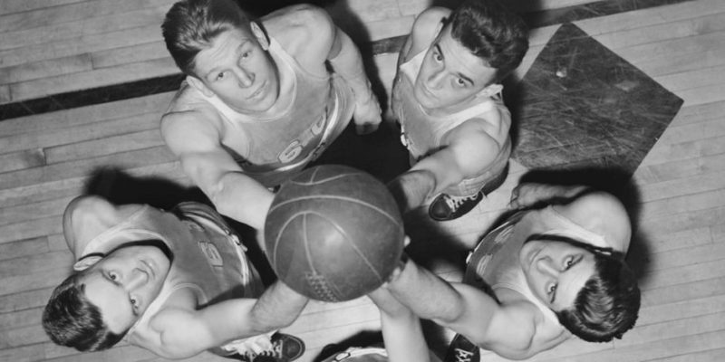
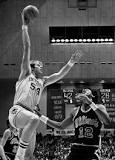

| YO | INTRODUCCION |
|---|---|
El baloncesto, basquetbol o básquetbol (castellanización de basketball, en inglés) es un deporte en equipo, en el que dos bandos de jugadores se enfrentan y tienen como objetivo hacer entrar un balón en el aro del equipo contrario. Gana el juego el equipo que más anotaciones o “canastas” haga. La cancha de básquetbol es una superficie plana, interior o exterior, que tiene un aro en cada extremo suspendido a unos tres metros de altura. Cada vez que un equipo realiza una canasta, suma puntos. Cada canasta tiene distinto puntaje de acuerdo al lugar de la cancha desde el que se realiza el tiro. El básquetbol es uno de los deportes más practicados en la actualidad por equipos de hombres y mujeres, tanto de forma profesional como amateur. La liga más reconocida de básquetbol es la NBA, una liga privada estadounidense en la que juegan equipos como Los Angeles Lakers y los Chicago Bulls. Además, existen otras variantes de este deporte, como baloncesto en silla de ruedas, el streetball y el baloncesto 3×3. La Federación Internacional de Baloncesto (FIBA) es el ente regulador de la práctica de este deporte en el mundo entero y la encargada de organizar competiciones oficiales. El básquetbol es deporte olímpico desde 1936. |
Se dice que el baloncesto, que es un juego moderno, tiene sus orígenes en una escuela de los Estados Unidos, en el año 1891. Quien promovió este juego fue un señor llamado James Naismith, instructor de deporte en el YMCA (Asociación de Jóvenes Cristianos), en la ciudad de Springfield (Massachusetts). Cuenta la historia de este juego que una caja de duraznos fue el primer cesto empleado por quienes crearon el Baloncesto. Este canasto era colocado en lo alto de los árboles o de un muro, y los jugadores debían usar una escalera para sacar el balón cuando se producía una anotación. Entonces el número de jugadores en el campo de era ilimitado, pero para 1983, se aceptó que podían jugar en canchas pequeñas cinco contra cinco, y en las canchas grandes, nueve contra nueve. El baloncesto en Colombia Para el año de 1925, el hermano francés Janebaud y don David Martínez Collazos, profesor de La Salle, en Santander, dieron a conocer las primeras nociones del Baloncesto en Colombia. Para el 18 de julio de 1925, con motivo de las fiestas patrias de nuestro país, se llevó a cabo el primer partido de baloncesto en Colombia, entre dos equipos del Liceo de la Salle. A partir de ese partido se difundió en los centros educativos, principalmente dirigidos por los hermanos cristianos. El baloncesto llegó al Instituto Técnico Central de Bogotá, en el colegio San Pedro Claver de Bucaramanga, y el colegio San José de Guanenta, en San Gil. El primer partido entre un equipo nacional y uno extranjero se realizó en la cancha del Club Deportivo Tequendama, el 4 de julio de 1931. Bogotá en 1938 es sede de los Juegos Bolivarianos, en conmemoración del IV Centenario de la fundación de Bogotá. El profesor mexicano López Hinojosa, fue apoyo importante en el desarrollo del Baloncesto en los juegos; Colombia sale campeón en femenino y masculino. Por otro lado vale la pena destacar que el Baloncesto Colombiano femenino ubicarse en un tercer puesto de un Sud Americano venciendo a Argentina en logra en 1981, y para 1983, la representación femenina de Colombia en el Suramericano logra el primer puesto en la final frente a Brasil por marcador de 62 a 51. Colombia no perdió ningún partido.
|  |  |  |
1. El balón puede ser lanzado en cualquier dirección con una o ambas manos.
2. El baloncesto consiste en introducir un balón, que dará punto, en un aro ubicado a 3 metros de altura.
3. El balón puede ser golpeado en cualquier dirección con una o ambas manos, pero nunca con el puño.
4. Un jugador no puede correr con el balón. El jugador debe lanzarlo desde el lugar donde lo toma.
5. El balón debe ser sujetado con o entre las manos. Los brazos o el cuerpo no pueden usarse para sujetarlo.
6. No se permite cargar con el hombro, agarrar, empujar, golpear o zancadillear a un oponente.
7. Si un equipo hace tres faltas consecutivas (sin que el oponente haya hecho ninguna en ese intervalo), se contará un punto para sus contrarios.
8. El árbitro principal, "referee", jugará el balón y decide cuando está en juego, dentro del campo o fuera, a quién pertenece y llevará el tiempo. Decidirá cuando se consigue un punto, llevará el marcador y cualquier otra tarea propia de un árbitro.
9. El tiempo será de dos mitades de 15 minutos con un descanso de 5 minutos entre ambas.
10. El equipo que consiga más puntos será el vencedor.
{kind=link}
{kind=link}
{kind=link}